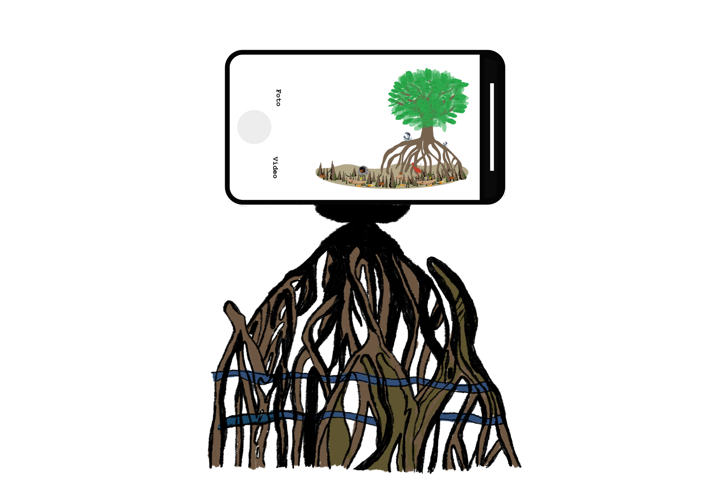
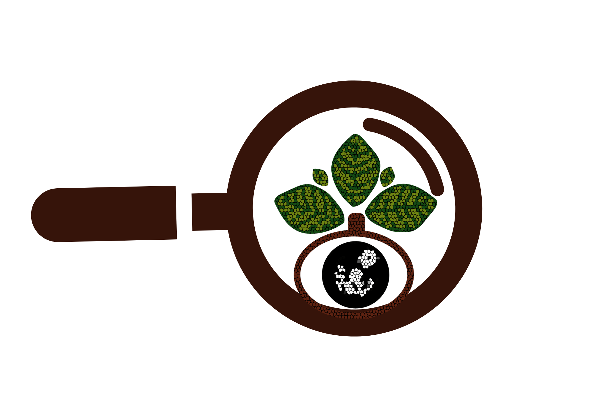
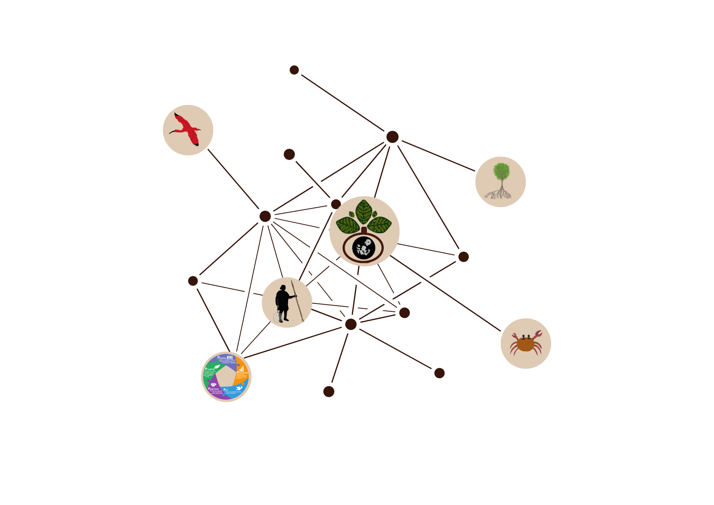

DataMangue
Explore o ecossistema de dados dos manguezais e seus maretórios

StoryMaps
Veja as histórias através da fotografia e faça uma imersão nos manguezais e seus maretórios.

Registre sua pesquisa
Contribua para a construção do ecossistema de dados dos manguezais, registre sua pesquisa ou projeto.

Visualização
Acesse à plataforma de visualização de dados sobre os manguezais e seus maretórios.
Recursos didáticos
Acesse aos recursos didáticos e guias co criados pela equipe do Observatório do Mangue.